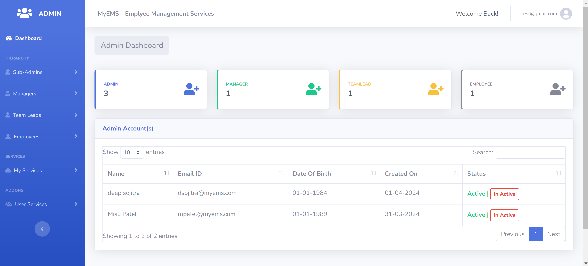

This blog explains how I developed an Employee Management System (EMS) using ASP.NET Core MVC, Entity Framework Core, and SQL Server. The system helps manage employee records, roles, departments, and provides basic HR functionality.

The EMS was designed for small to mid-sized businesses to track employee records, assign departments, and maintain work roles.
Frameworks: ASP.NET Core MVC, Entity Framework Core
Database: SQL Server
Version Control: GitHub
Building this system helped me improve my skills in layered architecture, dependency injection, and data validation in ASP.NET Core. I also practiced managing user roles and permissions, which are crucial in enterprise applications.